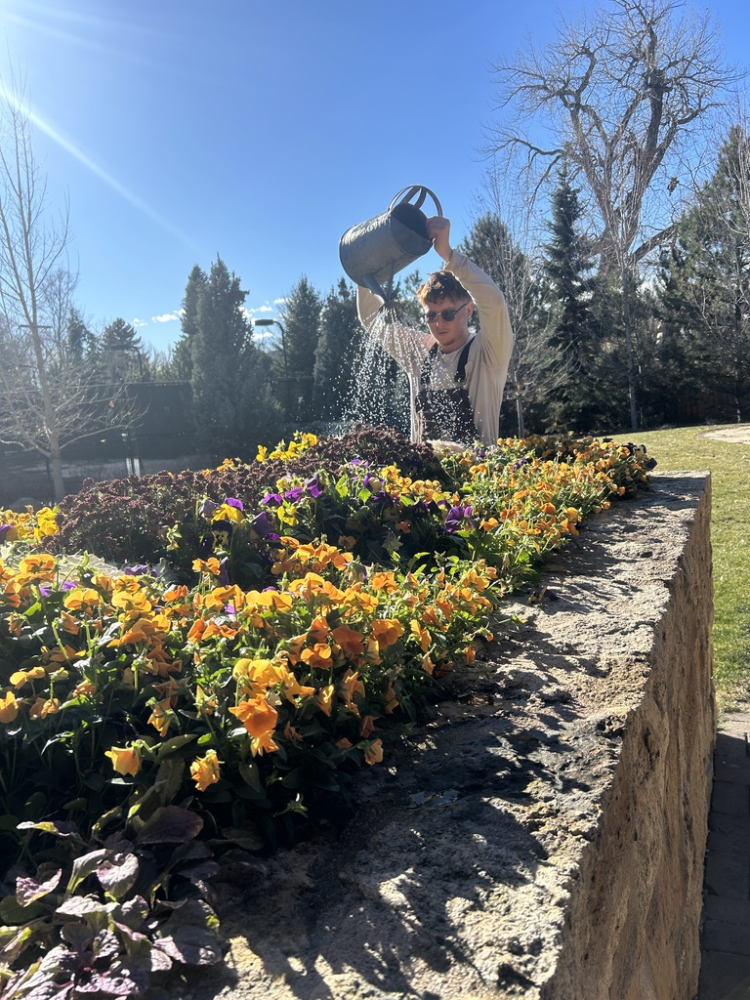

Maintenance
From deadheading to major cleanouts we got you covered. Keeping your landscape looking its best is just the beginning at Pollen Nation. With proper soil care and well-designed irrigation, plants are given the foundation they need to do more than survive—they grow strong, resilient, and long-lived. As landscapes mature, a thoughtfully planned seasonal maintenance schedule allows plants to reach their full potential without being overworked or overcorrected.
Through careful pruning, targeted interventions, and ecologically sound practices, we maintain spaces that look well cared for while continuing to function as living systems. Rather than relying on chemical fixes or one-size-fits-all programs, we tailor maintenance to each site’s plants, soils, and goals. The result is a landscape that remains vibrant, resilient, and aligned with Colorado’s natural cycles—season after season.
Through careful pruning, targeted interventions, and ecologically sound practices, we maintain spaces that look well cared for while continuing to function as living systems. Rather than relying on chemical fixes or one-size-fits-all programs, we tailor maintenance to each site’s plants, soils, and goals. The result is a landscape that remains vibrant, resilient, and aligned with Colorado’s natural cycles—season after season.
